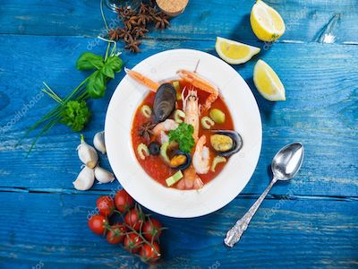

Lobster Bisque

Ingredients:
- 1/2 lb lobster meat, cut up in small pieces
- 1/4 cup white wine
- 2 tbsp minced shallots
- 2 tbsp chopped green onions
- 3 crushed garlic cloves
- 2 tsp Worcestershire sauce
- 2 tsp Tabasco sauce
- 1 tsp dried thyme
- 6 tbsp dry sherry
- 1 tsp paprika
- 1 cup hot water
- tsp lobster base(or bullion, base is better)
- 4 oz tomato paste
- 2 bay leaves
- 2 cups heavy whipping cream
- 4 tbsp butter
- Heat some oil on medium high heat and saute shallots, onions, and garlic for one minute.
- Deglaze the pan with white wine.
- Add the worcestershire, tabasco and thyme and saute for another minute.
- Deglaze the pan with the sherry.